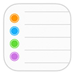

Importing From Reminders
Drafts can import reminders from a list in the iOS Reminders app. If you enable this feature, when drafts is launched, it will look for a list in the Reminders app, and create drafts using the title and note content of any incomplete tasks in that list. After successful import, it will mark those tasks as complete to prevent duplicate imports.
The default list to import from is “Drafts”, but the list name you wish to import from can be changed in settings.
If you are using iCloud sync for Reminders, you can add to the “Drafts” reminder list in the Reminders app on OS X. The reminders will sync to your iOS devices, then be imported into Drafts the next time it launches on your iPhone or iPad if you have enabled the “Import reminders” feature.
Creating Reminders
Drafts has two action steps that can also create individual reminders, or full lists of reminders in very flexible ways. For information on export to reminders read about the Reminders and List in Reminders action steps.
Example actions:
- Reminder: Creates a single reminder task using the first line of the draft as the title and remain text as a note.
- List in Reminders: Adds each line of the draft as a separate reminder task. This action can be modified to point to a specific list, or the first line of the draft can specify a list dynamically by started with a # character.
- Reminder with options: Prompts to create a reminder with a number of options for setting due date, priority and selecting target list.
Scripting Reminders
For more advanced integrations, Drafts can script reading and writing of Reminders and Reminder lists. Visit the Reminder and ReminderList scripting documentation for details.
Reminder and Privacy Settings
For any of Drafts reminders integration features to work, you must allow Drafts access to Reminders.
The first time you attempt to use any Reminders-related features in Drafts, you will be asked for permission. If you “Don’t Allow” and later want to enable access, visit the iOS Settings app, under Privacy to enable Drafts access.

{kind=link}